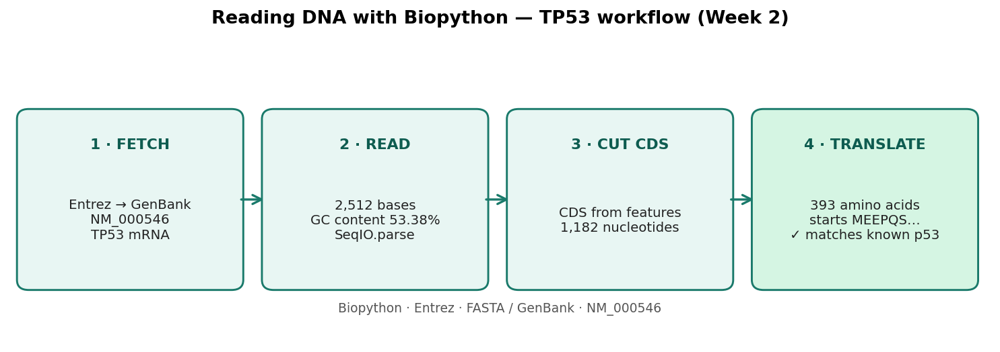
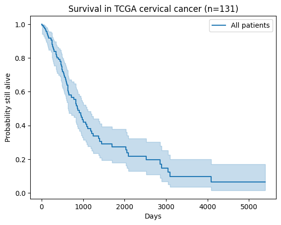

Week 1 · Complete
Differential Expression, Redone in Python
Rebuilt an H. pylori infection analysis (GSE70394) in Python. The biology replicated the original R analysis — and the honest result was zero significant genes after multiple-testing correction, which is exactly why methods like limma exist.
GEOparsepandasPyDESeq2seaborn
View code on GitHub →
Week 2 · Complete
Reading DNA with Biopython
Fetched and parsed the TP53 sequence from NCBI: GC content, DNA-to-protein translation, and a pipeline sanity check against the known 393-amino-acid length of the p53 protein.

BiopythonEntrezFASTA / GenBank
View code on GitHub →
Week 3 · Complete
Survival Analysis on TCGA Cervical Cancer
Kaplan–Meier survival curves on TCGA-CESC clinical data (307 cases). Only 131 patients had a usable follow-up time (72 died, 59 censored) — the other 174 alive patients had no follow-up time and were dropped, stated honestly. Median survival about 850 days: the curve drops fast in the first ~1,000 days, then flattens.

lifelinesTCGA-CESCpandasmatplotlib
View code on GitHub →
Week 7 · Anchor project
Cervical Cancer, in Code
Tumor vs normal differential expression on TCGA-CESC data, including HPV-linked genes — bringing my published cervical cancer research into computation.
Figure placeholder — DEG results (Week 7)
TCGA-CESCHPV genes
Planned